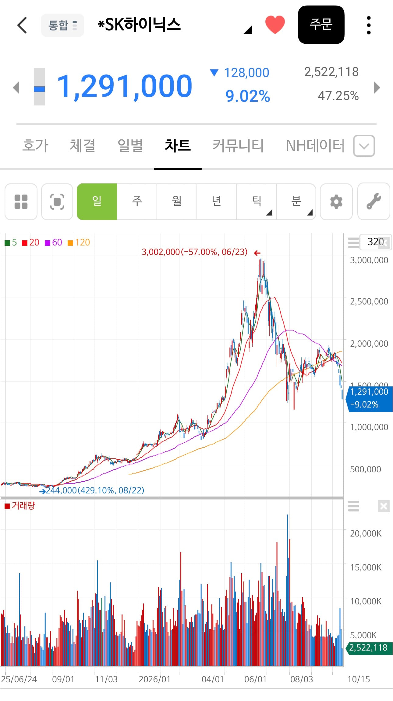

68 · 13 · 7 시간 전 · 원문

수집 당시 댓글 13개
쉽지않다 · 6 시간 전
6월..여름이었다
뭐야ㅅㅂ살려줘요 · 6 시간 전
60까지가나?
클럽 · 6 시간 전
300에 산놈이 설마 있겠냐 드립이지
열려라짱깨 · 6 시간 전
500이 말은 되겠냐
괴인 · 6 시간 전
삼전 35층..살려줘.
민초바리 · 6 시간 전
우리뭐 전쟁터졌어? 하루 연속 이렇게빠지는게ㅋㅋ
norepfool · 6 시간 전
내가 주식 처음 시작할 때 매번 10만원을 못 넘고 꺾여서 안 샀었는데
노들나루 · 6 시간 전
스퀘어 180층에 살고 있어요
프레기온 · 6 시간 전
난 3개월전에 다 팔았지롱
프로파간디 · 6 시간 전
나라 망했냐!!!내가 망했다 ㅠㅠ
년째도쿄생활중 · 6 시간 전
얼마나 행복할까~~~
체대치즈 · 3 시간 전
손실봐서 공감된다..
스케 · 2 시간 전
300의 반값도 안되는 할인 대찬스라고!
6월..
여름이었다